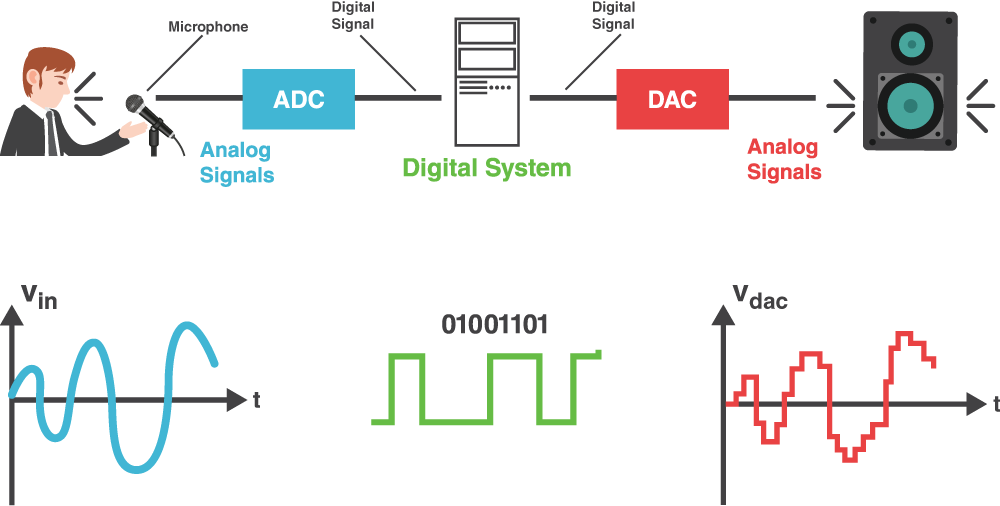

An analogue sound is a continuous wave, but a computer can only store discrete values. To convert sound into digital form, the analogue signal is first sampled: its amplitude is measured at regular time intervals, known as the sampling rate. A higher sampling rate captures more detail from the original wave.
Each sample is then quantised, which means its amplitude is rounded to the nearest value from a fixed set of levels. The number of bits used per sample (the bit depth) determines how many levels are available and how accurately the amplitude can be represented. Finally, these quantised values are stored as a sequence of binary numbers. Together, sampling and quantisation allow a continuous analogue sound to be represented and processed as digital data.
